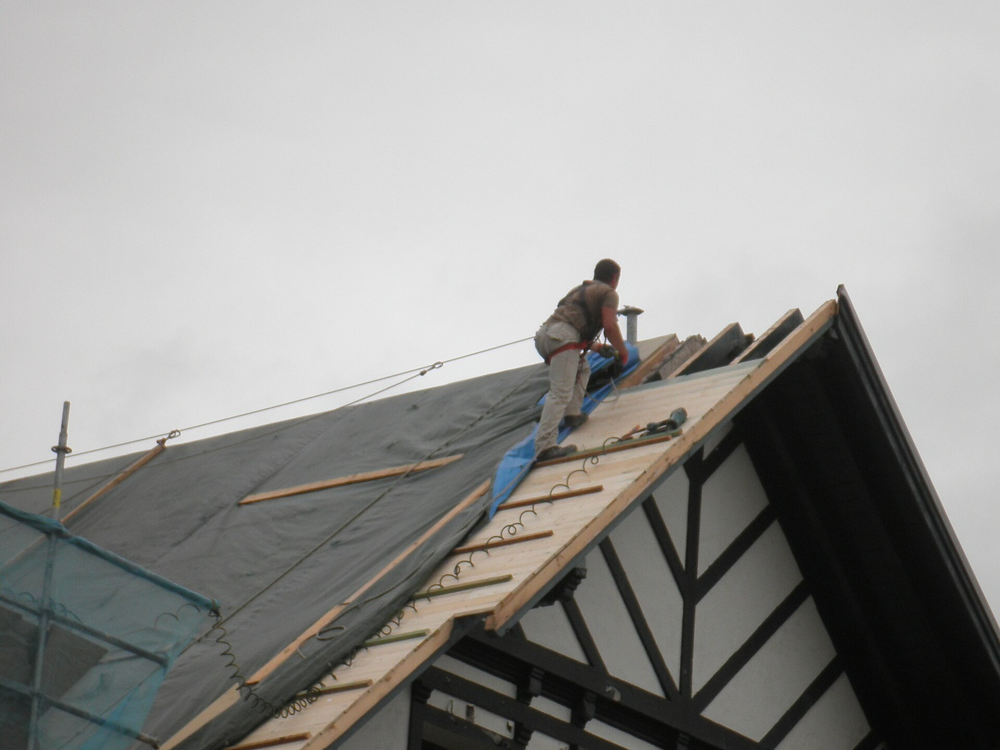
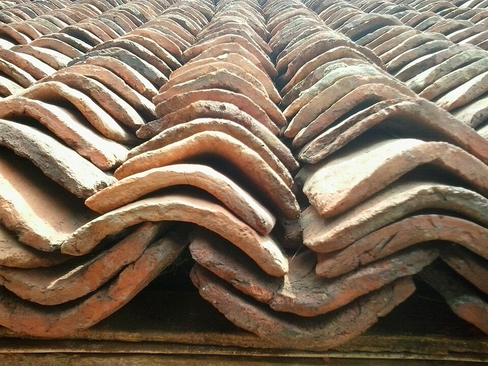
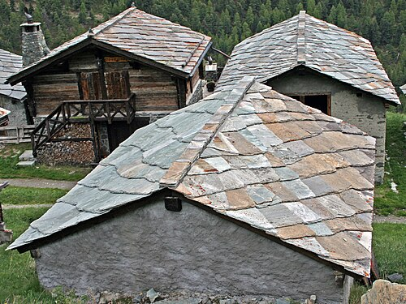
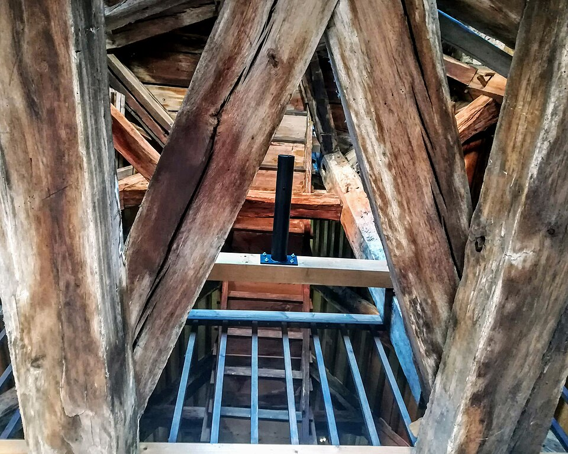
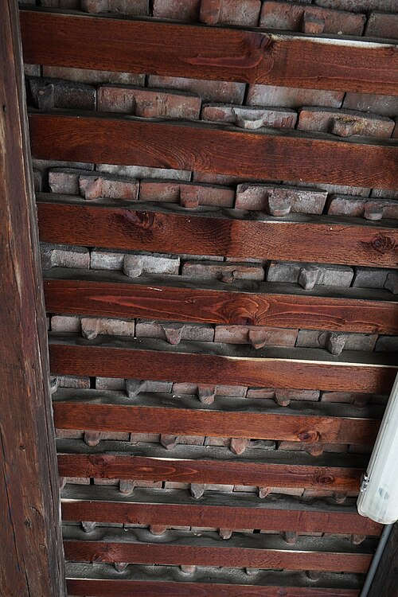
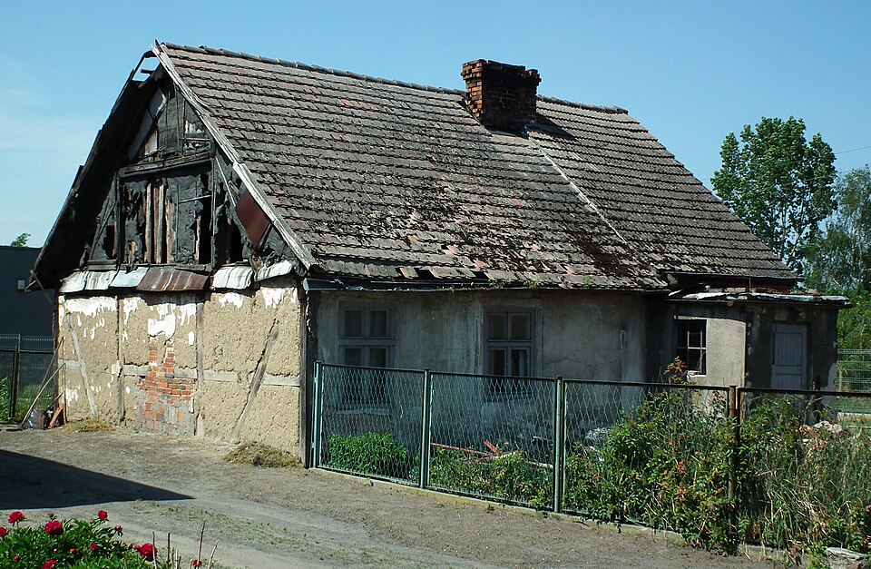
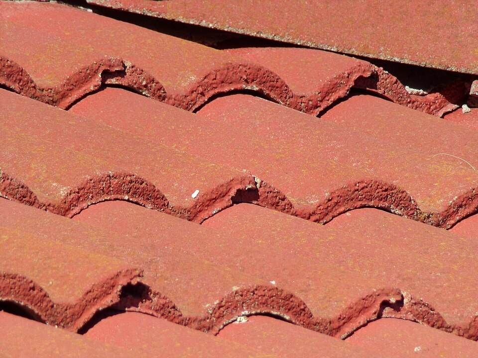
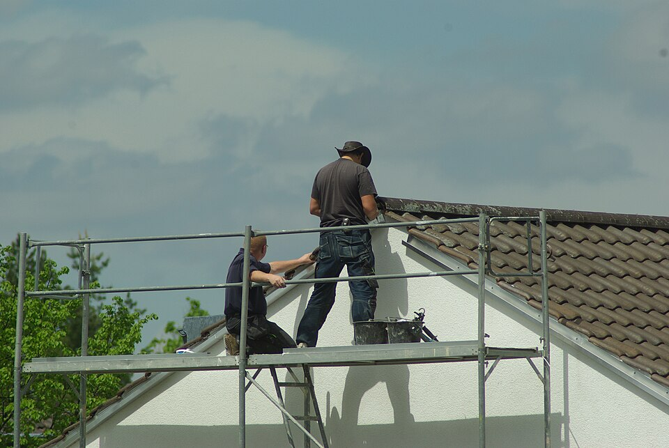
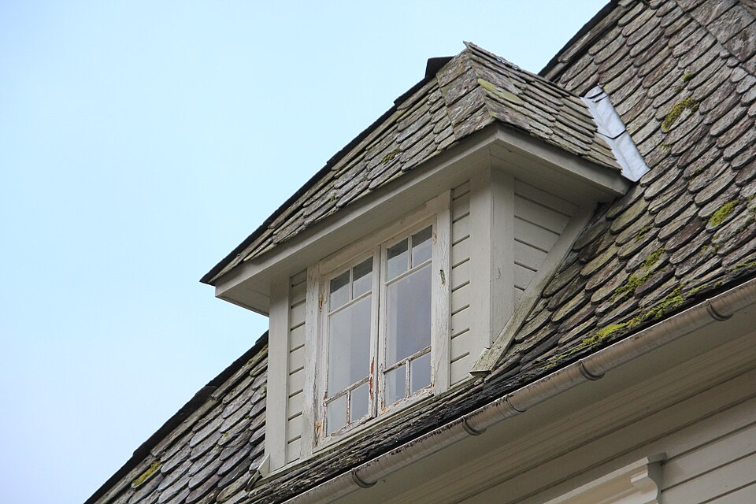

Couverture dans le pays de Bray
Tuiles, ardoise et charpente : nous réparons et refaisons les toits autour de Neufchâtel-en-Bray, avec une visite gratuite et un devis détaillé sous 8 jours.
Les travaux de toiture
Une fuite après un coup de vent ou un toit à refaire entièrement : nous venons voir avant de chiffrer.
- Toiture en tuiles
Tuiles cassées remplacées, faîtage refait au mortier ou à sec, toit entier repris.
- Ardoise
Ardoises posées au crochet ou au clou, noues et rives refaites sur les vieilles maisons.
- Charpente
Les bois sont contrôlés pièce par pièce ; nous changeons ceux qui ont pris l'eau.
- Liteaux et écran sous toiture
Le toit refait jusqu'aux chevrons, avec un écran neuf contre la pluie et la poussière.




Comment se passe un chantier
-
Visite du toit, gratuite
Nous montons voir l'état des tuiles, de la charpente et des gouttières, et nous prenons des photos pour vous.

-
Devis et choix des matériaux
Un devis ligne par ligne sous huit jours, avec les tuiles ou les ardoises qui vont avec votre maison.

-
Chantier et nettoyage
Échafaudage monté, toit bâché chaque soir, déchets évacués : vous retrouvez votre jardin propre.

Demander un devis
Décrivez le problème en quelques mots. Nous vous répondons pour fixer la visite du toit.

Zone d'intervention
- Neufchâtel-en-Bray
- Londinières
- Forges-les-Eaux
- Saint-Saëns
- Foucarmont
- Envermeu